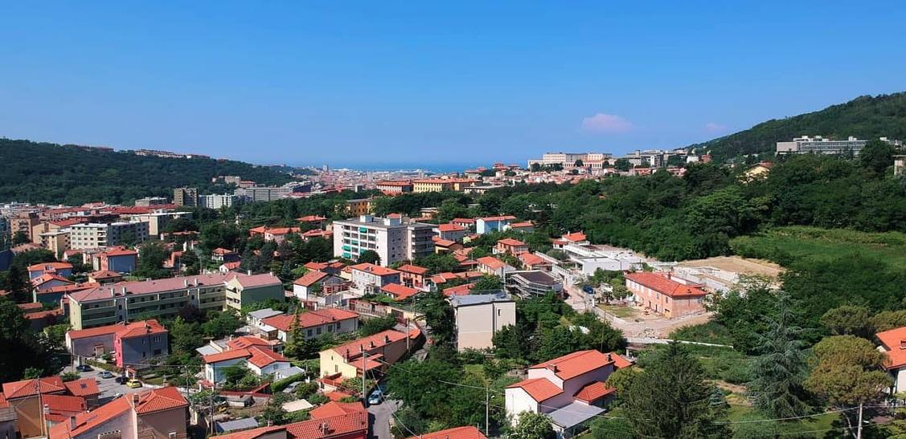

About
Tumbling down to the Adriatic from a wild, karstic plateau and almost
entirely surrounded by Slovenia, the city is physically isolated from
the rest of the Italian peninsula. From as long ago as the 1300s,
Trieste has indeed faced east, later becoming a free port under
Austrian rule. The city blossomed under the 18th- and 19th-century
Habsburgs; Vienna's seaside salon was also a fluid borderland where
Italian, Slavic, Jewish, Germanic and even Greek culture intermingled.
Devotees come to think of its glistening belle époque cafes, dark
congenial bars and buffets and even its maddening bora wind as their
own; it’s also a great base for striking out into the surrounding
Carso and Collio wine country.

Gallery
Attractions
- Castello di Miramare
- Osteria Salvagente
- Caffè San Marco
- Borgo Teresiano
- Piazza dell'Unità d'Italia